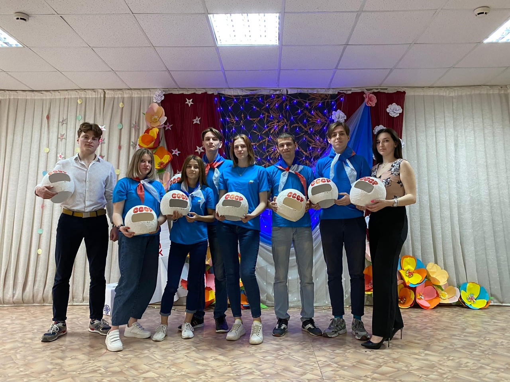
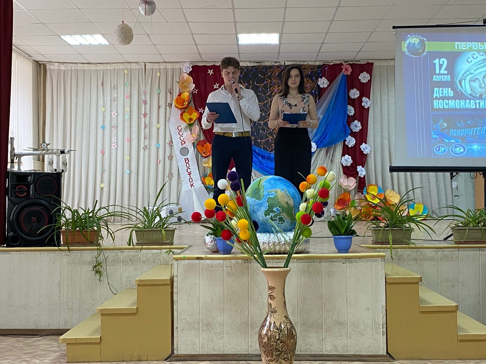
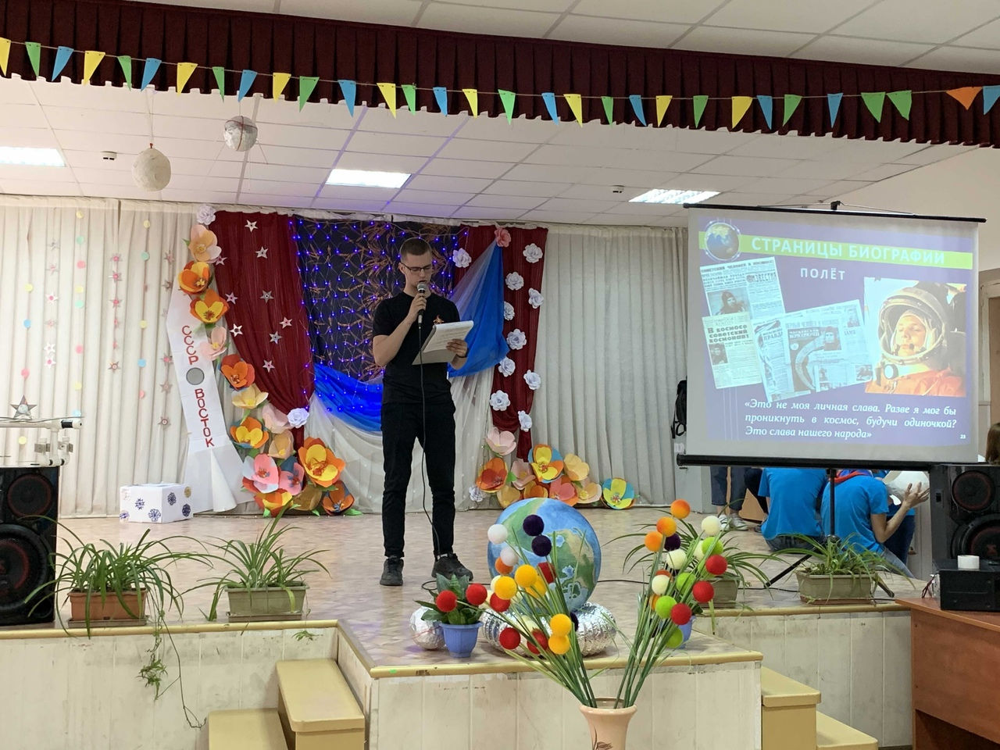
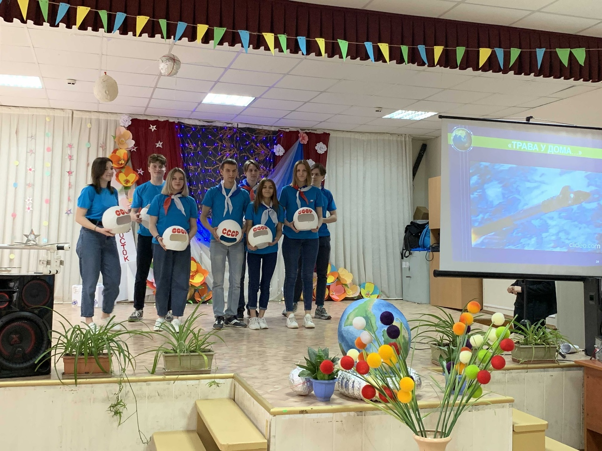

День космонавтики
12 апреля 1961 года впервые в мире на космическом корабле «Восток» совершил полет первый космонавт планеты - Юрий Алексеевич Гагарин. 60 лет назад началась новая эра – эра освоения космоса. Наша страна и весь мир отмечают это событие. Не остались в стороне и обучающиеся нашего колледжа.
12 апреля во всех группах прошли тематические классные часы, посвященные Дню космонавтики.
12 апреля обучающиеся групп 9 ИБАС и 10 ИБАС подготовили открытый классный час на тему: «Знаете каким он парнем был!»



